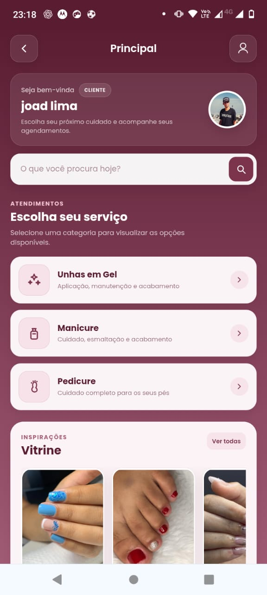

Alongamento de unhas
Para quem deseja explorar outros comprimentos e formatos com um acabamento personalizado.
Entenda as diferenças Consultar agendamentoAtendimento personalizado de nail design na região dos Pimentas, em Guarulhos. Conheça meus trabalhos, escolha seu serviço de unhas e agende seu próximo horário online.
Explore acabamentos, cores e estilos para encontrar a inspiração do seu próximo atendimento de unhas em Guarulhos.
Ainda não sabe qual técnica escolher? Conheça os procedimentos, tire suas dúvidas no blog e consulte a disponibilidade no aplicativo antes de agendar.
Para quem deseja explorar outros comprimentos e formatos com um acabamento personalizado.
Entenda as diferenças Consultar agendamentoUma cobertura estruturada aplicada sobre as unhas naturais, sem o objetivo de alongá-las.
Banho de gel ou blindagem? Consultar agendamentoUma técnica de cobertura mais discreta para valorizar e proteger o acabamento das unhas naturais.
Saiba quando escolher Consultar agendamentoPara quem procura cor, brilho e um acabamento que combine com sua rotina.
Gel ou tradicional? Consultar agendamentoOs procedimentos disponíveis, durações e valores são apresentados no aplicativo de agendamento.
Nail Designer em Guarulhos, com atendimento na região dos Pimentas.
Com mais de 8 anos de experiência na área da beleza, Isabele Mariana é Nail Designer em Guarulhos, especialista em alongamento de unhas, apaixonada por valorizar a beleza e o estilo de cada cliente. Seu trabalho une técnica, dedicação e atenção aos detalhes, oferecendo serviços de manicure e cuidados com as unhas com acabamento personalizado.
Cada atendimento acontece em um espaço aconchegante e climatizado, pensado para proporcionar conforto e bem-estar. As clientes contam com recepcionista, café e cappuccino, além de materiais de marcas reconhecidas no mercado e uma ampla variedade de cores de esmaltes para escolher.
Mais do que unhas bonitas, Isabele busca proporcionar uma experiência de cuidado, confiança e autoestima, fazendo de cada visita um momento especial.
Conheça o agendamentoSeu estilo e suas preferências no centro da escolha.
Conteúdos sobre técnicas, manutenção e cuidados.
Atendimento na região dos Pimentas.
Consulte os serviços, dias e horários pelo aplicativo.
Quer conhecer a experiência de outras clientes? Confira as avaliações públicas da Isabele Mariana Nails no Google.
Avaliações fornecidas por Google Maps. As avaliações exibidas são uma seleção retornada pelo Google.
Seu relato ajuda outras clientes a conhecerem o atendimento.
Consulte os serviços de nail design disponíveis, escolha a melhor data e horário e confirme seu atendimento diretamente pelo sistema de agendamento.
Encontre o procedimento ideal para você.
Confira os dias e horários disponíveis.
Tudo pronto para o seu próximo atendimento.

Ideias, técnicas e orientações para acompanhar seu momento de autocuidado.

Banho de gel, blindagem ou alongamento? Entenda o que muda no comprimento, na estrutura e na manutenção antes de escolher seu atendimento em Guarulhos.
Ler artigo
Conheça sete cuidados práticos para proteger suas unhas, hidratar as mãos e planejar o próximo atendimento com tranquilidade.
Ler artigo
Entenda as diferenças entre esmaltação em gel e tradicional, compare durabilidade, cuidados e saiba o que considerar antes de escolher.
Ler artigo
Banho de gel, blindagem ou alongamento? Entenda o que muda no comprimento, na estrutura e na manutenção antes de escolher seu atendimento em Guarulhos.
Ler artigo
Atendimento de nail design na região dos Pimentas, em Guarulhos. Entre em contato pelo WhatsApp para tirar dúvidas sobre serviços, horários ou agendamento.